👋 Hola, soy Cindy Bernardino
Desarrolladora
Desarrolladora
de sistemas web
Apasionada por crear experiencias web intuitivas y sistemas robustos. Especializada en el ecosistema .NET y actualmente expandiendo horizontes con Java Spring Boot.

 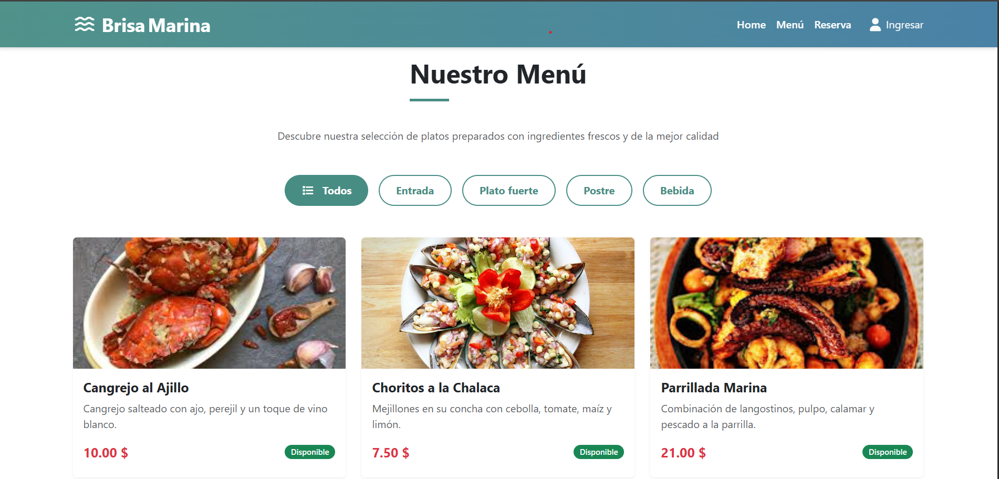
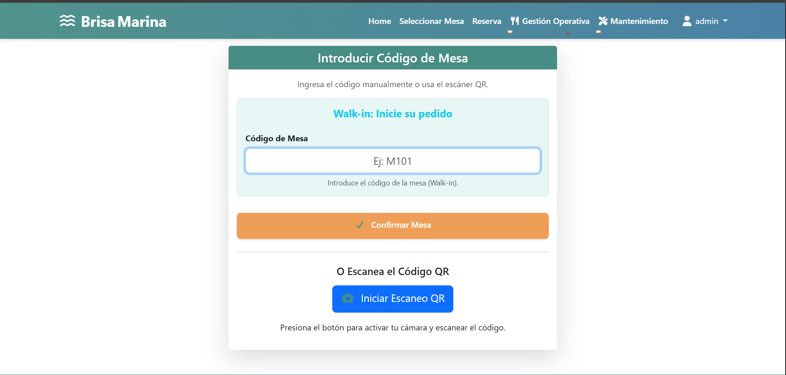
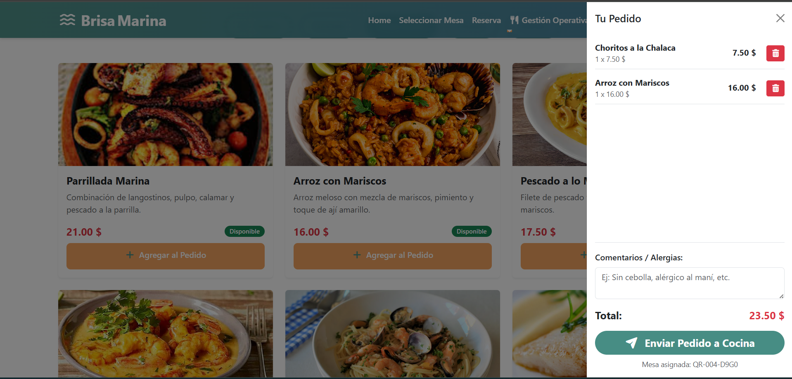
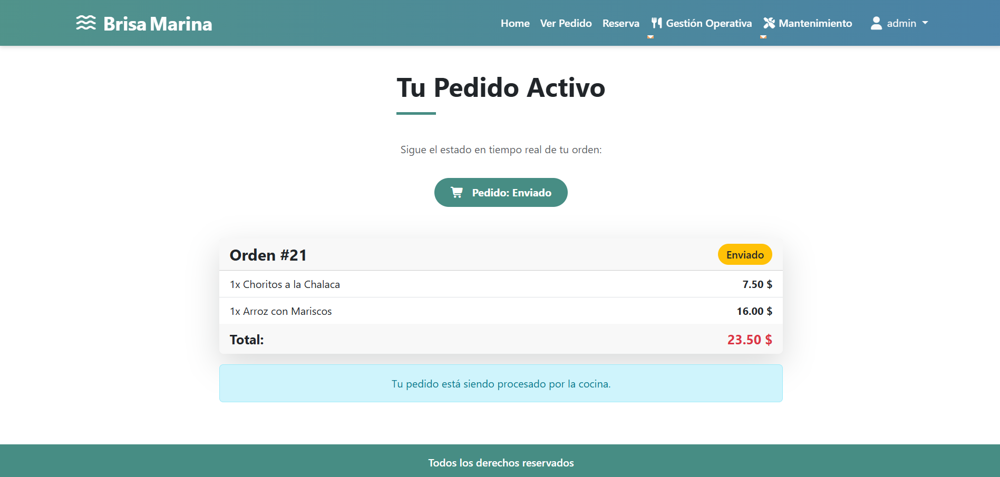
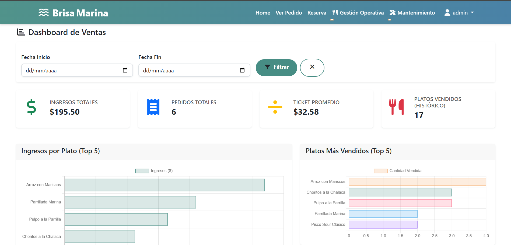
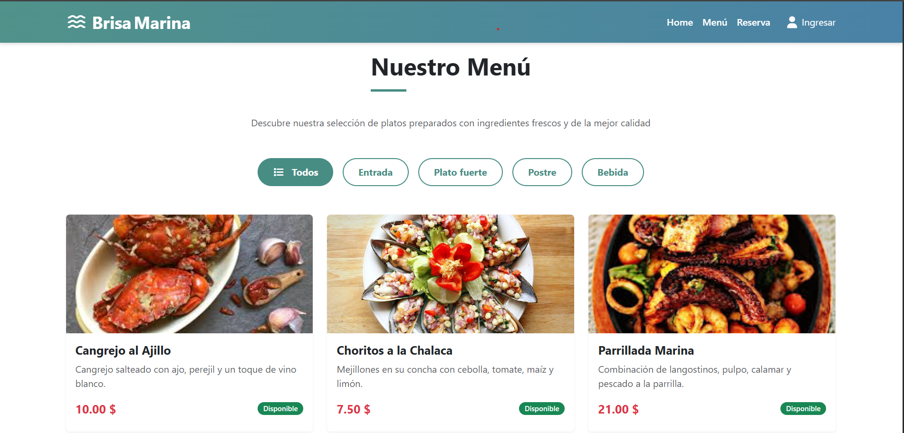
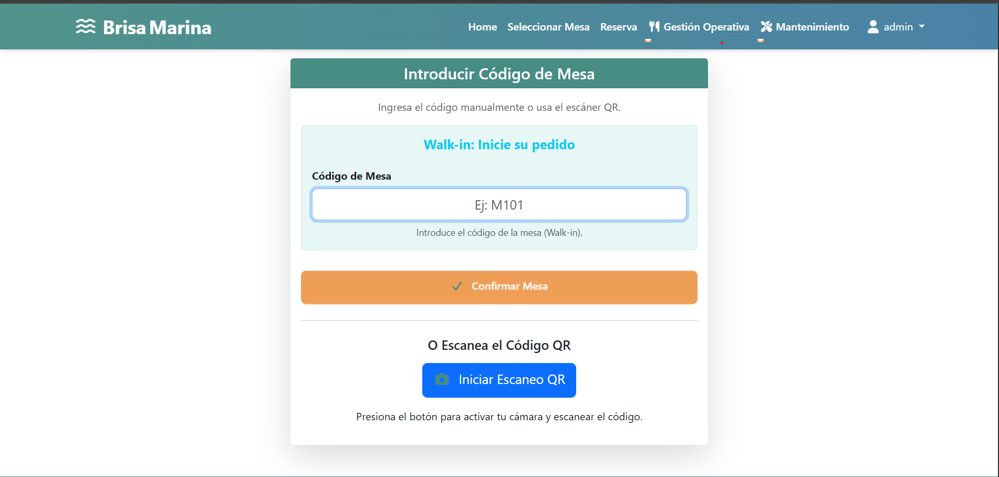
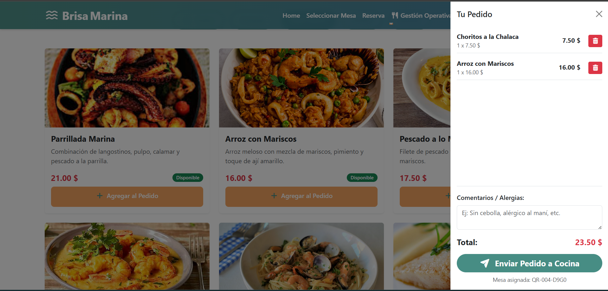
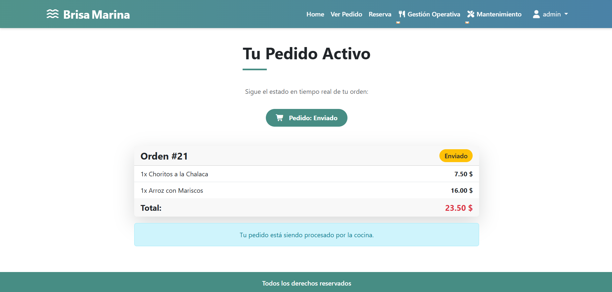
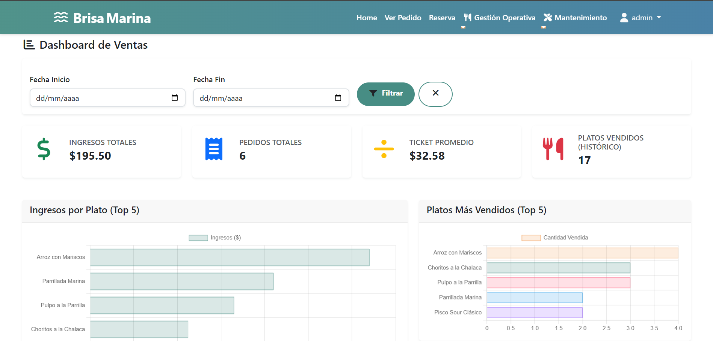


 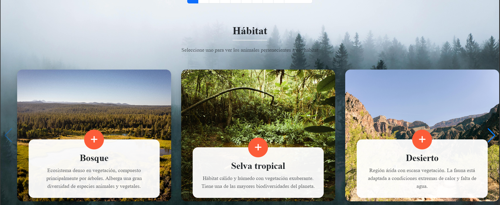
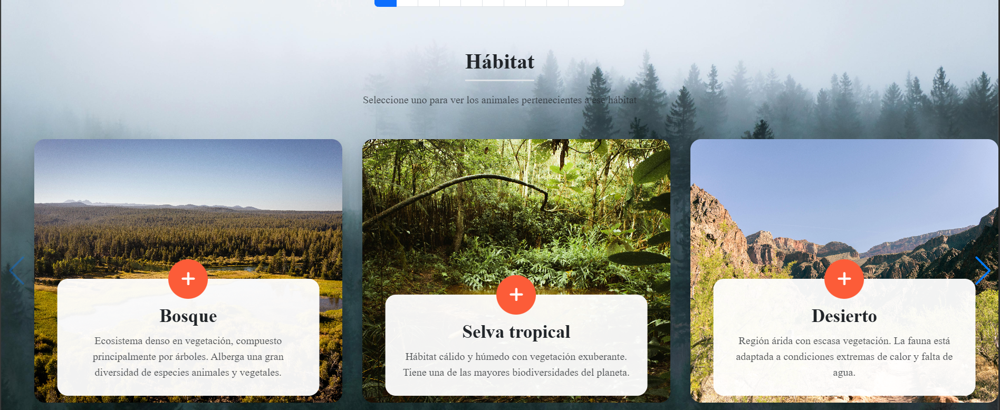